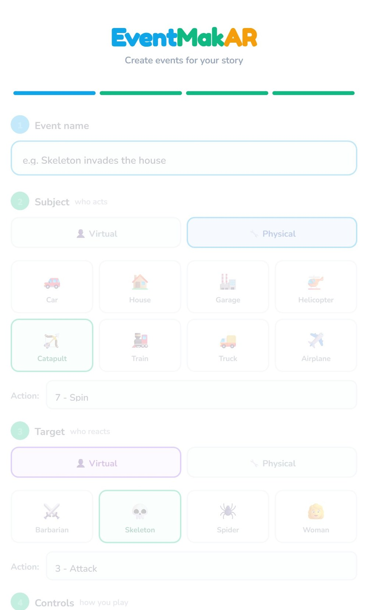

Work
Four systems. Each one is playable here rather than described at you — the interaction on each is the idea the project is actually about.
Project 01 · M.S. thesis · HRI 2027, under review
Multi-Robot Authoring Research
How can someone with no robotics background author expressive motion for a robot team, and reuse it when the scenario changes?
The stance the whole system is built on: the robots do not move until a person approves the plan.
Described in general terms while the paper is under review. The system name, the architecture and results figures, and video of the fleet are held back until the review process allows them. I am glad to send figures and a demo to faculty who ask — email me.
The problem
Expressive robot motion works: a robot that moves the right way can tell a bystander what it is doing with no screen and no voice. But those behaviors were hand engineered for one scenario. Change the task and a researcher has to author the motion again — a bottleneck no end user can get past.
What I built
Two ways to author a motion, neither assuming a robotics background: sketching the path, or demonstrating it physically. A planning stage turns a plain English scenario into per robot assignments drawn from the user's own library, refusing and regenerating output that does not hold up. And the fleet and its tracking — the first localization approach was not accurate enough to tell whether a robot had performed the authored motion, so I replaced it.
The study
A counterbalanced within subjects study comparing the two authoring routes, combining think aloud during authoring with workload and usability measures afterwards and interviews at the end, so what people said while authoring can be read against what they reported once they were done.
Project 02 · formative study · N = 11
Expressive Robot Motion Study
Can non experts tell what a robot is doing from its motion alone?
Each primitive is a movement pattern meant to be read at a glance rather than decoded.

What the study found
Eleven participants watched the fleet and reported what they thought each robot was doing. Non experts could read robot state from motion alone, with no screen, label or explanation.
And where it broke
Urgent and Searching were regularly confused — both fast and repetitive, and the distinction I designed in was not the one people perceived. Every primitive was also tuned by hand for one scenario, so none of it travelled.
Why it matters
If a designer hand authoring behaviors can still pick two that people confuse, the fix is not a better vocabulary. It is letting the people who know the task author the motions themselves — which is what the thesis does.
Project 03 · deployed at a public workshop
EventMakAR
Can people who do not program author stories that cross between virtual characters and physical devices?

The devices are in the room. The characters are not — they exist only through AR. Authoring a story means sequencing events that cross between the two.
The problem
An AR experience driven by real robots normally has a programmer in the loop: someone has to describe, in code, which character does what and when. That puts the story decisions with whoever can edit the project rather than whoever has the idea.
How it works
Four virtual characters — Barbarian, Skeleton, Spider, Woman — and eight physical devices: Car, House, Garage, Helicopter, Catapult, Train, Truck, Airplane. Characters take actions like Walk, Run, Attack, Dance; devices take Forward, Spin, Open, Close. The author sequences those into a story.
The interesting part
Every event crosses, or does not cross, between the two worlds. A physical device can trigger a virtual character, a character can trigger a device, or either can trigger its own kind — four event types the tool works out from what the author picked. It exports the exact JSON the existing Unity parser reads, so authored stories run without anyone touching the project.
What this is and is not
A deployment, not a study: I collected no measures at the workshop. Its value is evidence that the authoring model survives contact with real users, and that I ship systems other people use.
Project 04 · manuscript in preparation
Social web inspired video
Can the short video format students already watch carry course competencies?
The point of the pipeline is throughput: a route an instructor can actually run is what makes covering a whole competency set possible.
The premise
Nursing programs have to show students attain the competencies in the AACN Essentials. The material carrying them is usually built for a lecture slot: long, static, in a format students do not otherwise choose to watch.
The Evidence Elevator
A design contribution rather than an engineering one: a visual device for teaching the hierarchy of evidence, moving from expert opinion at the bottom up to meta analysis at the top. One spatial image to hang the hierarchy on, hard to convey in a bulleted list and easy in fifteen seconds of video.
Why it sits beside the robots
The same question in another medium: a person with domain expertise but no production background needs to express something, a model does the composition, and they keep control of the content. There the output is robot motion; here it is instructional video.